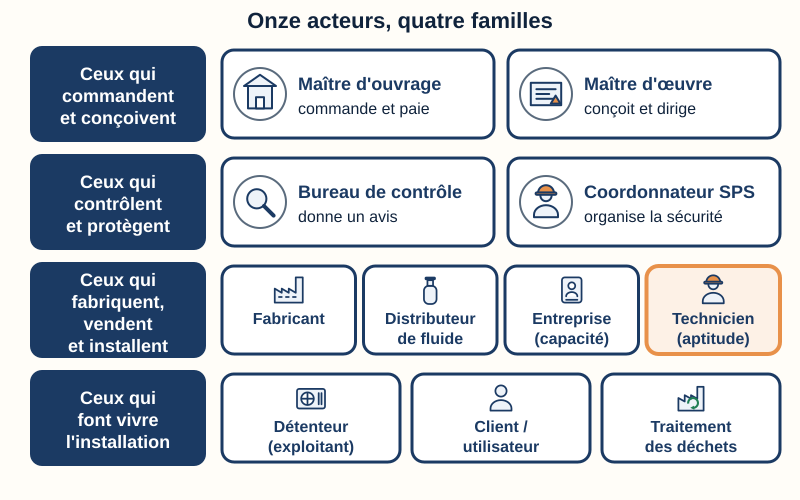
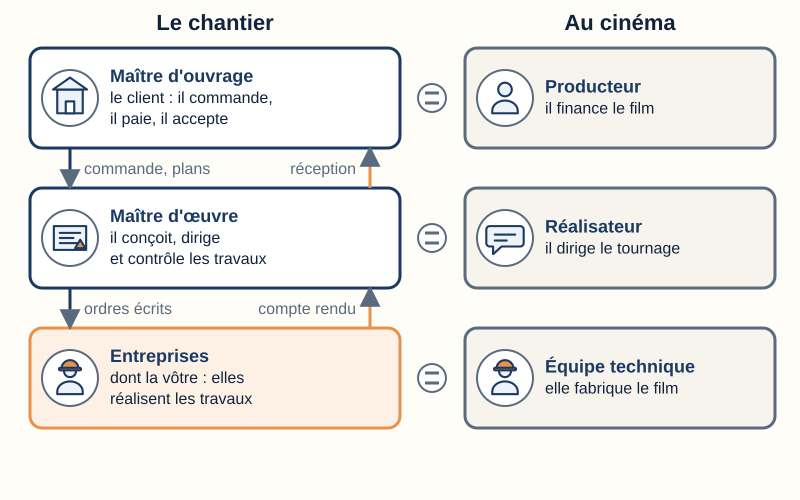
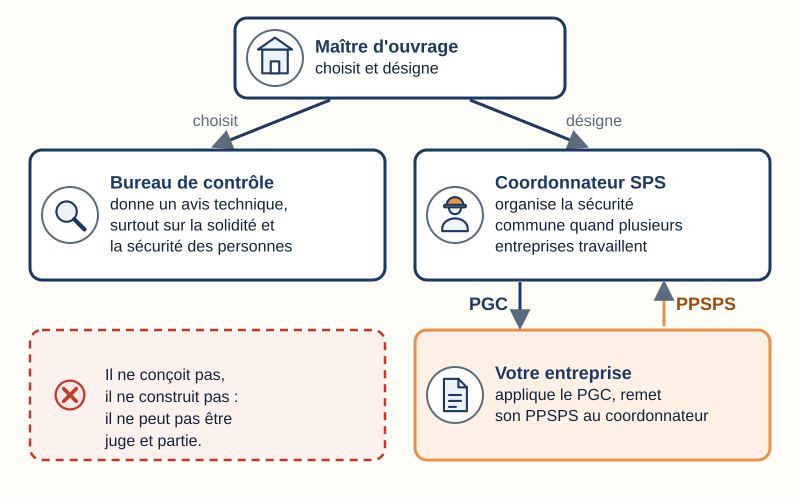
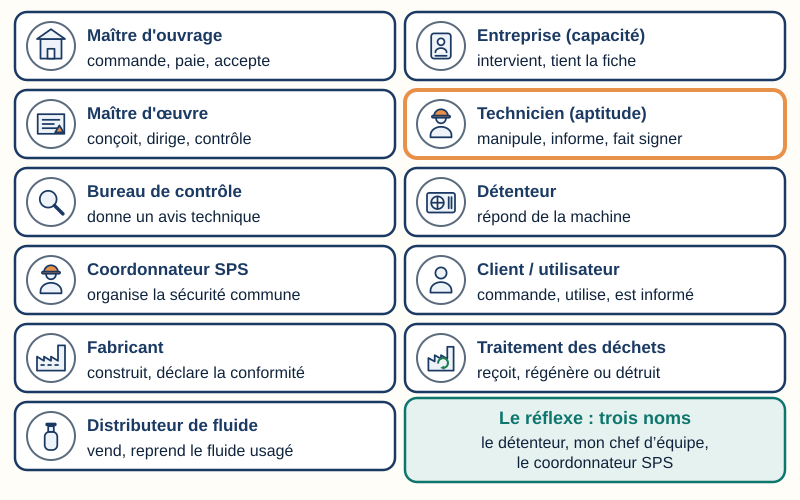

Fluidique & thermique
Qui intervient sur une installation frigorifique ?
Mini-station commentée · 8 écrans et 4 questions · environ 10 minutes
À la fin de la station, vous savez nommer les onze acteurs d'une installation frigorifique. Pour chacun, vous savez dire ce qu'il fait, de quoi il répond (l'installation, le fluide, la sécurité) et ce que vous lui devez : l'informer, lui faire signer un papier ou lui transmettre une copie.
Sert notamment pour
- CAP IFCA : savoir S1.1 « Les intervenants » · compétence C1.2 « Communiquer avec les différents acteurs » · tâche T4 « Communiquer avec les différents intervenants »
- Bac Pro MFER (2028) : savoir S1.2 « les intervenants »
- 2nde TNE : compétence CC12 « Ordonner les données nécessaires en tenant compte des interactions avec les autres intervenants »
- Origine du réseau : TP TECVC, REAC TP-00133 — hors REAC (culture professionnelle du technicien et du chargé d'affaires). Attestation d'aptitude 2025 : code 1.00 (la législation applicable).
Chaque écran peut être expliqué à voix haute : le bouton « Écouter » commente ce que vous voyez. Rien n'est dit qui ne soit aussi écrit.
Écran 1 sur 8
Onze acteurs, quatre familles
Une installation frigorifique n'a pas un seul responsable. Autour d'elle, onze acteurs se succèdent. Un acteur, c'est une personne ou une entreprise qui a un rôle précis sur le chantier ou dans la vie de la machine.
- Ceux qui commandent et conçoivent : le maître d'ouvrage, le maître d'œuvre.
- Ceux qui contrôlent et protègent : le bureau de contrôle, le coordonnateur SPS.
- Ceux qui fabriquent, vendent et installent : le fabricant, le distributeur de fluide, l'entreprise titulaire de l'attestation de capacité, le technicien titulaire de l'attestation d'aptitude.
- Ceux qui font vivre l'installation : le détenteur (l'exploitant), le client ou l'utilisateur, l'installation de traitement des déchets.
Pour chaque acteur, posez trois questions : Que fait-il ? De quoi répond-il ? Que lui dois-je ?
Répondre de veut dire : en être responsable devant la loi, devant le client ou devant son employeur. Trois sujets reviennent : l'installation, le fluide, la sécurité.

Écran 2 sur 8
Celui qui commande, celui qui conçoit
Le maître d'ouvrage (MOA)
La personne pour qui on installe : le restaurateur qui veut une chambre froide, la mairie qui équipe une cantine.
- Son rôle
- Il commande les travaux, il les paie, il les accepte à la fin.
- Sa responsabilité
- L'ouvrage. C'est lui qui accepte les travaux, avec ou sans réserves (art. 1792-6 du Code civil).
- Vous lui devez
- Un travail conforme au devis. À la fin, avec votre responsable, vous lui faites signer le procès-verbal de réception.
Le maître d'œuvre (MOE)
Le professionnel qui conçoit le projet et dirige les travaux : un architecte, un bureau d’études, parfois une entreprise générale.
- Son rôle
- Il dessine les plans, prépare les devis, coordonne les entreprises et contrôle l’exécution.
- Sa responsabilité
- La conformité du projet et la conduite des travaux.
- Vous lui devez
- Le respect de ses plans et de ses ordres écrits. Si un plan ne marche pas, vous l’en informez avant de modifier.
Comme au cinéma : celui qui paie le film (le producteur) n’est pas celui qui le réalise. Le maître d’ouvrage est le producteur. Le maître d’œuvre est le réalisateur. L’entreprise, dont vous faites partie, est l’équipe technique.
Sur votre chantier, demandez : « Qui est le maître d'ouvrage ? Y a-t-il un maître d'œuvre ? »

Écran 3 sur 8
Celui qui contrôle, celui qui protège
Le bureau de contrôle
Un organisme agréé, choisi par le maître d’ouvrage. On dit aussi « contrôleur technique ».
- Son rôle
- Il vérifie les risques techniques du projet, surtout la solidité et la sécurité des personnes, et donne son avis.
- Sa responsabilité
- Son avis, dans les limites de sa mission. Il ne conçoit pas et ne construit pas : il ne peut pas être juge et partie.
- Vous lui devez
- Les pièces qu’il demande (notices, résultats d’essais), transmises par votre responsable.
Le coordonnateur SPS
SPS veut dire « sécurité et protection de la santé ». Quand plusieurs entreprises travaillent sur un même chantier de bâtiment, le maître d’ouvrage désigne un coordonnateur.
- Son rôle
- Il organise la sécurité commune. Il écrit le plan général de coordination (PGC) : les règles de tout le chantier.
- Sa responsabilité
- La coordination de la sécurité, sous la responsabilité du maître d’ouvrage.
- Vous lui devez
- Le respect du PGC. Votre entreprise lui remet son propre plan, le PPSPS (plan particulier de sécurité et de protection de la santé). Un danger vu sur le chantier se signale tout de suite.
Ne confondez pas le PGC (celui du coordonnateur) et le PPSPS (celui de votre entreprise). Le plan de prévention est un autre papier : voir la station « Les papiers du chantier ».

Écran 4 sur 8
Ceux qui font : l’entreprise et le technicien
L'entreprise titulaire de l'attestation de capacité
Le Code de l’environnement l’appelle l’opérateur : l’entreprise qui, à titre professionnel, met en service, entretient, contrôle l’étanchéité, charge ou récupère le fluide (art. R. 543-76).
- Son rôle
- Elle intervient chez le détenteur avec des techniciens attestés et un outillage vérifié.
- Sa responsabilité
- Ses interventions et ses salariés. Elle établit la fiche d’intervention.
- Vous lui devez
- Un compte rendu exact : fiche remplie, registre à jour, fluide récupéré rapporté.
Le technicien titulaire de l'attestation d'aptitude
C’est vous. L’attestation d’aptitude est personnelle : elle prouve que vous savez manipuler le fluide.
- Son rôle
- Il manipule le fluide et intervient sur le circuit.
- Sa responsabilité
- Son geste, sa propre sécurité et celle des autres (Code du travail, art. L. 4122-1).
- Vous devez aux autres
- Informer, faire signer, transmettre (écran 7).
Le détenteur doit faire appel à un opérateur attesté pour charger la machine en fluide, la mettre en service ou toute autre opération sur le circuit (art. R. 543-78).

Écran 5 sur 8
Celui qui possède la machine, celui qui s’en sert
Le détenteur (l’exploitant)
Selon le Code de l’environnement (art. R. 543-76), c’est celui qui exerce un pouvoir réel sur le fonctionnement technique de la machine, propriétaire ou non. En pratique, c’est souvent l’exploitant : le gérant d’un restaurant qui fait tourner sa chambre froide est le détenteur.
- Son rôle
- Il fait vivre l’installation : il l’utilise et la fait entretenir.
- Sa responsabilité
- La machine : faire contrôler l’étanchéité et réparer les fuites (art. R. 543-79), faire appel à un opérateur attesté (R. 543-78), garder les documents au moins cinq ans (R. 543-80 et R. 543-82).
- Vous lui devez
- L’informer de l’état de la machine et des fuites, lui faire signer la fiche d’intervention quand elle l’exige (au-delà de 5 tonnes équivalent CO₂ de HFC (hydrofluorocarbures) ou de PFC (perfluorocarbures), ou de 3 kg de HCFC (hydrochlorofluorocarbures) : art. R. 543-82), lui remettre l’original.
Le client et l’utilisateur
Le client commande l’intervention et la paie. L’utilisateur se sert de l’installation tous les jours : par exemple le cuisinier et sa chambre froide. Souvent, client et détenteur sont la même personne. Client et utilisateur comptent pour un seul acteur : une seule ligne dans votre tableau.
- Son rôle
- Il utilise l’installation et signale ce qui ne va pas.
- Sa responsabilité
- L’usage de l’installation et des consignes qu’on lui a données.
- Vous lui devez
- Une explication en mots simples : ce que vous avez fait, comment s’en servir, les consignes de sécurité.
Détenteur n’est pas opérateur. Le détenteur contrôle la machine. L’opérateur est l’entreprise qui intervient dessus (art. R. 543-76). Dans les trois stations de ce lot, « opérateur » garde ce seul sens.
La tonne équivalent CO₂ compare l’effet de serre des fluides : c’est la masse de fluide multipliée par son potentiel de réchauffement planétaire (PRP). Voir la station « PRP & ODP ».

Écran 6 sur 8
Du fabricant à la filière : trois acteurs autour du fluide
Le fabricant
Il construit l’équipement (groupe froid, condenseur…) et le met sur le marché.
- Son rôle
- Il livre l’équipement avec son nom et son adresse, et sa notice d’instructions.
- Sa responsabilité
- La conformité de l’équipement : il établit la déclaration UE de conformité et la tient à la disposition des autorités.
- Vous lui devez
- Lui transmettre les défauts constatés, lire et suivre sa notice, ne pas modifier l’équipement, la lui réclamer si elle manque.
Le distributeur de fluide
Il vend le fluide frigorigène aux entreprises.
- Son rôle
- Il fournit des contenants et reprend sans frais les fluides usagés et les emballages, dans les limites du Code (art. R. 543-91).
- Sa responsabilité
- La reprise des fluides usagés.
- Vous lui devez
- Lui rapporter le fluide récupéré qui ne peut pas être réutilisé (ou le faire traiter sous votre responsabilité, art. R. 543-92).
L’installation de traitement
L’usine qui reçoit le fluide devenu déchet.
- Son rôle
- Elle reçoit, accepte ou refuse, puis régénère ou détruit.
- Sa responsabilité
- La bonne fin de vie du fluide : c’est elle qui clôt le bordereau.
- Vous lui devez
- Un bordereau de suivi (BSFF) exact, établi avec la station « Traçabilité ».

Écran 7 sur 8
Informer, faire signer, transmettre
- Informer : dire ce qui est fait, ce qui est constaté, ce qui est risqué. D’abord à l’oral, puis par écrit.
- Faire signer : faire valider le papier par celui qui doit le signer (la fiche d’intervention, le procès-verbal).
- Transmettre : remettre une copie à celui qui doit la garder (le détenteur, votre entreprise, le coordonnateur).
Vous arrivez sur le site
À qui ? Le client ou détenteur, et le coordonnateur SPS s’il y en a un.
Quoi ? Informer : qui vous êtes, ce que vous allez faire. Demander les consignes de sécurité du site.
Vous constatez une fuite
À qui ? Le détenteur.
Quoi ? Informer, et noter la fuite sur la fiche d’intervention.
Vous terminez
À qui ? Le détenteur.
Quoi ? Faire signer la fiche si elle l’exige, puis transmettre l’original.
Un fluide récupéré est à évacuer
À qui ? Le distributeur.
Quoi ? Transmettre le fluide avec son bordereau.
Pour vous entraîner à reconnaître qui fait quoi : JouéRézo.

Écran 8 sur 8
Bilan : un verbe par acteur
- Le maître d’ouvrage commande ; le maître d’œuvre conçoit et dirige.
- Le bureau de contrôle donne un avis ; le coordonnateur SPS organise la sécurité commune.
- L’entreprise a la capacité ; le technicien a l’aptitude. Il faut les deux.
- Le détenteur répond de la machine ; vous lui faites signer la fiche.
- Le fluide a sa filière : le distributeur, puis l’installation de traitement.
Le réflexe : avant d’intervenir, j’écris trois noms (ou trois fonctions) — le détenteur, mon chef d’équipe, le coordonnateur SPS s’il y en a un.

Question 1 sur 4
Un restaurateur fait installer une chambre froide. Qui est le maître d'ouvrage ?
Question 2 sur 4
Plusieurs entreprises travaillent en même temps sur un chantier de bâtiment. Qui organise la sécurité commune ?
Question 3 sur 4
Dans le Code de l'environnement, qui est le « détenteur » d'une installation frigorifique ?
Question 4 sur 4
Vous trouvez une fuite sur la chambre froide d'un client. Que faites-vous ?
Les correspondances de la station
- Aptitude & capacité (même sous-ligne) — les deux attestations de l’écran 4, en détail.
- Traçabilité (même sous-ligne) — la fiche d’intervention, le registre et le bordereau BSFF.
- Les papiers du chantier (sous-ligne Risques) — avant, pendant, après : qui remplit, qui signe.
- Le DUERP (sous-ligne Risques) — le document de l’employeur, et le plan de prévention.
- Les garanties (sous-ligne Certifications) — la réception, point de départ des garanties.
- JouéRézo — s’entraîner à reconnaître qui fait quoi.